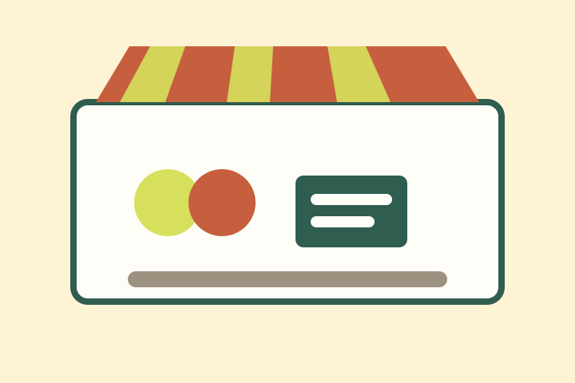

Fresh food
Seasonal produce, pantry staples, and cooking demonstrations from local growers.
Saturday Community Market
Desert Bloom Market brings neighborhood growers, student makers, repair volunteers, and small creative businesses together twice a month.
Plan your visit
Seasonal produce, pantry staples, and cooking demonstrations from local growers.
Bring small household items for diagnosis, repair advice, and parts guidance.
Student and community makers share posters, zines, prints, and digital projects.
Our goal is to make sustainable shopping and repair skills more visible, approachable, and connected to local creative work.